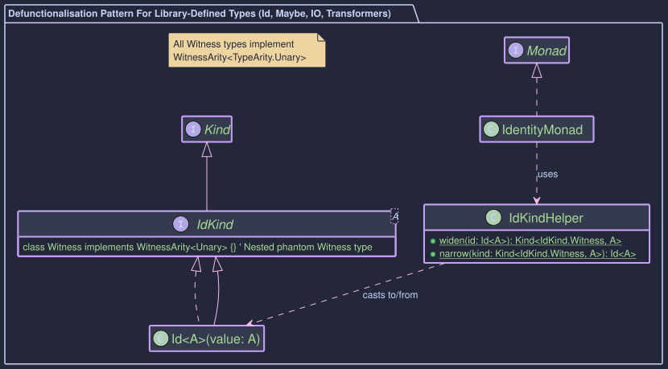
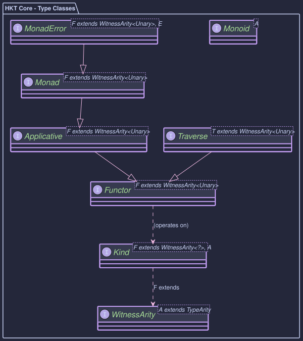
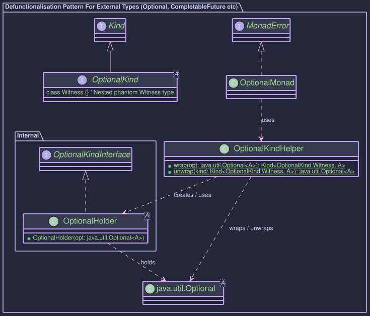

Core Concepts of Higher-Kinded-J
Higher-Kinded-J employs several key components to emulate Higher-Kinded Types (HKTs) and associated functional type classes in Java. Understanding these is crucial for using and extending the library.
1. The HKT Problem in Java
Java's type system lacks native Higher-Kinded Types. We can easily parameterise a type by another type (like List<String>), but we cannot easily parameterise a type or method by a type constructor itself (like F<_>). We can't write void process<F<_>>(F<Integer> data) to mean "process any container F of Integers".
2. The Kind<F, A> Bridge

- Purpose: To simulate the application of a type constructor
F(likeList,Optional,IO) to a type argumentA(likeString,Integer), representing the concept ofF<A>. F(Witness Type): This is the crucial part of the simulation. SinceF<_>isn't a real Java type parameter, we use a marker type (often an empty interface specific to the constructor) as a "witness" or stand-in forF. Examples:ListKind<ListKind.Witness>represents theListtype constructor.OptionalKind<OptionalKind.Witness>represents theOptionaltype constructor.EitherKind.Witness<L>represents theEither<L, _>type constructor (whereLis fixed).IOKind<IOKind.Witness>represents theIOtype constructor.
A(Type Argument): The concrete type contained within or parameterised by the constructor (e.g.,IntegerinList<Integer>).- How it Works: An actual object, like a
java.util.List<Integer>, is wrapped in a helper class (e.g.,ListHolder) which implementsKind<ListKind<?>, Integer>. ThisKindobject can then be passed to generic functions that expectKind<F, A>. - Reference:
Kind.java
3. Type Classes (Functor, Applicative, Monad, MonadError)
These are interfaces that define standard functional operations that work generically over any simulated type constructor F (represented by its witness type) for which an instance of the type class exists. They operate on Kind<F, A> objects.

Functor<F>:- Defines
map(Function<A, B> f, Kind<F, A> fa): Applies a functionf: A -> Bto the value(s) inside the contextFwithout changing the context's structure, resulting in aKind<F, B>. ThinkList.map,Optional.map. - Laws: Identity (
map(id) == id), Composition (map(g.compose(f)) == map(g).compose(map(f))). - Reference:
Functor.java
- Defines
Applicative<F>:- Extends
Functor<F>. - Adds
of(A value): Lifts a pure valueAinto the contextF, creating aKind<F, A>. (e.g.,1becomesOptional.of(1)wrapped inKind). - Adds
ap(Kind<F, Function<A, B>> ff, Kind<F, A> fa): Applies a function wrapped in contextFto a value wrapped in contextF, returning aKind<F, B>. This enables combining multiple independent values within the context. - Provides default
mapNmethods (e.g.,map2,map3) built uponapandmap. - Laws: Identity, Homomorphism, Interchange, Composition.
- Reference:
Applicative.java
- Extends
Monad<F>:- Extends
Applicative<F>. - Adds
flatMap(Function<A, Kind<F, B>> f, Kind<F, A> ma): Sequences operations within the contextF. Takes a valueAfrom contextF, applies a functionfthat returns a new contextKind<F, B>, and returns the result flattened into a singleKind<F, B>. Essential for chaining dependent computations (e.g., chainingOptionalcalls, sequencingCompletableFutures, combiningIOactions). Also known in functional languages asbindor>>=. - Laws: Left Identity, Right Identity, Associativity.
- Reference:
Monad.java
- Extends
MonadError<F, E>:- Extends
Monad<F>. - Adds error handling capabilities for contexts
Fthat have a defined error typeE. - Adds
raiseError(E error): Lifts an errorEinto the contextF, creating aKind<F, A>representing the error state (e.g.,Either.Left,Try.Failureor failedCompletableFuture). - Adds
handleErrorWith(Kind<F, A> ma, Function<E, Kind<F, A>> handler): Allows recovering from an error stateEby providing a function that takes the error and returns a new contextKind<F, A>. - Provides default recovery methods like
handleError,recover,recoverWith. - Reference:
MonadError.java
- Extends
4. Defunctionalisation (Per Type Constructor)
For each Java type constructor (like List, Optional, IO) you want to simulate as a Higher-Kinded Type, a specific pattern involving several components is used. The exact implementation differs slightly depending on whether the type is defined within the Higher-Kinded-J library (e.g., Id, Maybe, IO, monad transformers) or if it's an external type (e.g., java.util.List, java.util.Optional, java.util.concurrent.CompletableFuture).
Common Components:
-
The
XxxKindInterface: A specific marker interface, for example,OptionalKind<A>. This interface extendsKind<F, A>, whereFis the witness type representing the type constructor.- Example:
public interface OptionalKind<A> extends Kind<OptionalKind.Witness, A> { /* ... Witness class ... */ } - The
Witness(e.g.,OptionalKind.Witness) is a static nested final class (or a separate accessible class) withinOptionalKind. ThisWitnesstype is what's used as theFparameter in generic type classes likeMonad<F>.
- Example:
-
The
KindHelperClass (e.g.,OptionalKindHelper): A crucial utility class with staticwrapandunwrapmethods:wrap(...): Converts the standard Java type (e.g.,Optional<String>) into itsKind<F, A>representation.unwrap(Kind<F, A> kind): Converts theKind<F, A>representation back to the underlying Java type (e.g.,Optional<String>).- Crucially, this method throws
KindUnwrapExceptionif the inputkindis structurally invalid (e.g.,null, the wrongKindtype, or, where applicable, aHoldercontainingnullwhere it shouldn't). This ensures robustness.
- Crucially, this method throws
- May contain other convenience factory methods.
-
Type Class Instance(s): Concrete classes implementing
Functor<F>,Monad<F>, etc., for the specific witness typeF(e.g.,OptionalMonad implements Monad<OptionalKind.Witness>). These instances use theKindHelper'swrapandunwrapmethods to operate on the underlying Java types.
External Types:

- For External Types (e.g.,
java.util.Optional,java.util.List,java.util.concurrent.CompletableFuture):- Since these JDK classes cannot be modified to directly implement an interface like
OptionalKind<A>, an internalHolderrecord is necessary. - Example (
OptionalHolder):// Typically package-private within OptionalKindHelper.java record OptionalHolder<A>(@NonNull java.util.Optional<A> optional) implements OptionalKind<A> {} - The
OptionalKindHelper.wrap(java.util.Optional<A> opt)method will create and return annew OptionalHolder<>(opt). - The
OptionalKindHelper.unwrap(Kind<OptionalKind.Witness, A> kind)method will check ifkindis aninstanceof OptionalHolder, then extract thejava.util.Optional<A>from it.
- Since these JDK classes cannot be modified to directly implement an interface like
Higher-Kinded-J Types:
- For Types Defined Within Higher-Kinded-J (e.g.,
Id,Maybe,IO, Monad Transformers likeEitherT):- These types are designed to directly participate in the HKT simulation.
- The type itself (e.g.,
Id<A>,MaybeT<F, A>) will directly implement its correspondingXxxKindinterface (e.g.,Id<A> implements IdKind<A>, whereIdKind<A> extends Kind<Id.Witness, A>). - In this case, a separate
Holderrecord is not needed for the primarywrap/unwrapmechanism in theKindHelper. XxxKindHelper.wrap(Id<A> id)would effectively be a type cast (after null checks) toKind<Id.Witness, A>becauseId<A>is already anIdKind<A>.XxxKindHelper.unwrap(Kind<Id.Witness, A> kind)would checkinstanceof Id(orinstanceof MaybeT, etc.) and perform a cast.
This distinction is important for understanding how wrap and unwrap function for different types. However, from the perspective of a user of a type class instance (like OptionalMonad), the interaction remains consistent: you provide a Kind object, and the type class instance handles the necessary operations.
5. Error Handling Philosophy
- Domain Errors: These are expected business-level errors or alternative outcomes. They are represented within the structure of the simulated type (e.g.,
Either.Left,Maybe.Nothing,Try.Failure, a failedCompletableFuture, potentially a specific result type withinIO). These are handled using the type's specific methods orMonadErrorcapabilities (handleErrorWith,recover,fold,orElse, etc.) after successfully unwrapping theKind. - Simulation Errors (
KindUnwrapException): These indicate a problem with the HKT simulation itself – usually a programming error. Examples include passingnulltounwrap, passing aListKindtoOptionalKindHelper.unwrap, or (if it were possible) having aHolderrecord contain anullreference to the underlying Java object it's supposed to hold. These are signalled by throwing the uncheckedKindUnwrapExceptionfromunwrapmethods to clearly distinguish infrastructure issues from domain errors. You typically shouldn't need to catchKindUnwrapExceptionunless debugging the simulation usage itself.